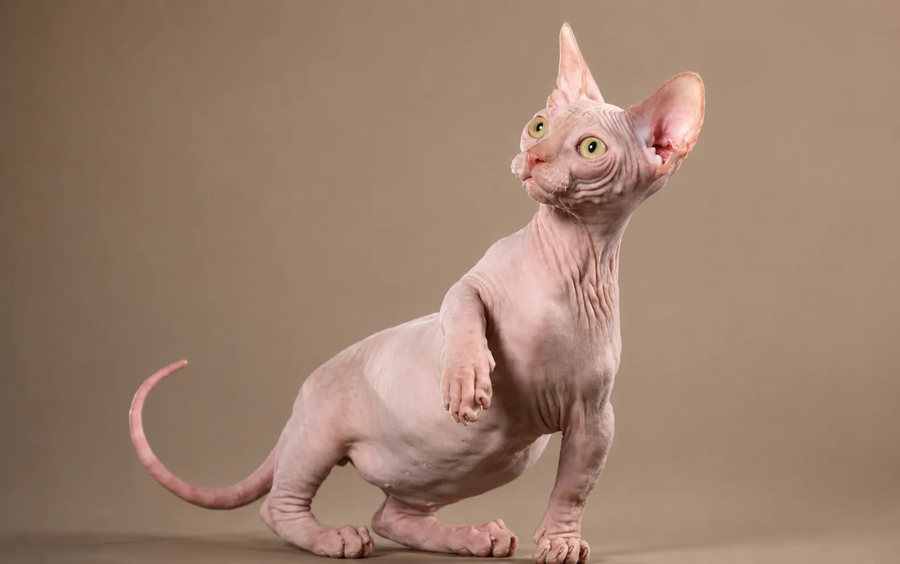

Bambino
4 Kittens Currently Available
About the Bambino Breed
The Bambino is a rare and extraordinary breed admired for its short legs, hairless appearance, and affectionate personality. Combining the playful charm of the Sphynx with a uniquely compact body, Bambinos have a distinctive appearance that makes them truly unforgettable.
Despite their small size, Bambino cats are energetic, intelligent, and full of personality. They are curious companions who love attention and enjoy being involved in everyday family activities.
Bambinos are known for their affectionate and social nature. They often form strong bonds with their families and enjoy spending time with children and other pets.
Like other hairless breeds, Bambinos thrive indoors and benefit from regular skin care and a warm environment.
Breed Highlights
- ✔ Short-Legged Unique Appearance
- ✔ Affectionate & People-Oriented
- ✔ Intelligent & Curious
- ✔ Playful & Energetic
- ✔ Social with Families and Other Pets
- ✔ Loves Warmth & Companionship
- ✔ Rare Hairless Breed
- ✔ Indoor Companion Breed
Quick Facts
- Origin: United States
- Personality: Friendly, playful, affectionate
- Coat: Hairless or peach-fuzz texture
- Energy Level: High
- Grooming: Moderate skin care required
- Lifespan: 9–15+ years